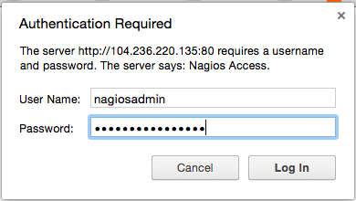
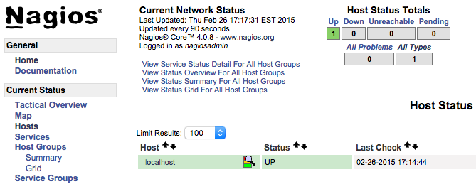

How To Install Nagios 4 and Monitor Your Servers on Ubuntu 14.04
Introduction
In this tutorial, we will cover the installation of Nagios 4, a very popular open source monitoring system, on Ubuntu 14.04. We will cover some basic configuration, so you will be able to monitor host resources via the web interface. We will also utilize the Nagios Remote Plugin Executor (NRPE), that will be installed as an agent on remote hosts, to monitor their local resources.
Nagios is useful for keeping an inventory of your servers, and making sure your critical services are up and running. Using a monitoring system, like Nagios, is an essential tool for any production server environment.
Prerequisites
To follow this tutorial, you must have superuser privileges on the Ubuntu 14.04 server that will run Nagios. Ideally, you will be using a non-root user with superuser privileges. If you need help setting that up, follow the steps 1 through 3 in this tutorial: Initial Server Setup with Ubuntu 14.04.
A LAMP stack is also required. Follow this tutorial if you need to set that up: How To Install Linux, Apache, MySQL, PHP (LAMP) stack on Ubuntu 14.04.
This tutorial assumes that your server has private networking enabled. If it doesn't, just replace all the references to private IP addresses with public IP addresses.
Now that we have the prerequisites sorted out, let's move on to getting Nagios 4 installed.
Install Nagios 4
This section will cover how to install Nagios 4 on your monitoring server. You only need to complete this section once.
Create Nagios User and Group
We must create a user and group that will run the Nagios process. Create a "nagios" user and "nagcmd" group, then add the user to the group with these commands:
- sudo useradd nagios
- sudo groupadd nagcmd
- sudo usermod -a -G nagcmd nagios
Install Build Dependencies
Because we are building Nagios Core from source, we must install a
few development libraries that will allow us to complete the build.
While we're at it, we will also install apache2-utils, which will be used to set up the Nagios web interface.
First, update your apt-get package lists:
- sudo apt-get update
Then install the required packages:
- sudo apt-get install build-essential libgd2-xpm-dev openssl libssl-dev xinetd apache2-utils unzip
Let's install Nagios now.
Install Nagios Core
Download the source code for the latest stable release of Nagios Core. Go to the Nagios downloads page, and click the Skip to download link below the form. Copy the link address for the latest stable release so you can download it to your Nagios server.
At the time of this writing, the latest stable release is Nagios 4.1.1. Download it to your home directory with curl:
cd ~
curl -L -O https://assets.nagios.com/downloads/nagioscore/releases/nagios-4.1.1.tar.gz
Extract the Nagios archive with this command:
- tar xvf nagios-*.tar.gz
Then change to the extracted directory:
- cd nagios-*
Before building Nagios, we must configure it. If you want to
configure it to use postfix (which you can install with apt-get), add --with-mail=/usr/sbin/sendmail to the following command:
- ./configure --with-nagios-group=nagios --with-command-group=nagcmd
Now compile Nagios with this command:
- make all
Now we can run these make commands to install Nagios, init scripts, and sample configuration files:
- sudo make install
- sudo make install-commandmode
- sudo make install-init
- sudo make install-config
- sudo /usr/bin/install -c -m 644 sample-config/httpd.conf /etc/apache2/sites-available/nagios.conf
In order to issue external commands via the web interface to Nagios, we must add the web server user, www-data, to the nagcmd group:
- sudo usermod -G nagcmd www-data
Install Nagios Plugins
Find the latest release of Nagios Plugins here: Nagios Plugins Download. Copy the link address for the latest version, and copy the link address so you can download it to your Nagios server.
At the time of this writing, the latest version is Nagios Plugins 2.1.1. Download it to your home directory with curl:
cd ~
curl -L -O http://nagios-plugins.org/download/nagios-plugins-2.1.1.tar.gz
Extract Nagios Plugins archive with this command:
- tar xvf nagios-plugins-*.tar.gz
Then change to the extracted directory:
- cd nagios-plugins-*
Before building Nagios Plugins, we must configure it. Use this command:
- ./configure --with-nagios-user=nagios --with-nagios-group=nagios --with-openssl
Now compile Nagios Plugins with this command:
- make
Then install it with this command:
- sudo make install
Install NRPE
Find the source code for the latest stable release of NRPE at the NRPE downloads page. Download the latest version to your Nagios server.
At the time of this writing, the latest release is 2.15. Download it to your home directory with curl:
- cd ~
- curl -L -O http://downloads.sourceforge.net/project/nagios/nrpe-2.x/nrpe-2.15/nrpe-2.15.tar.gz
Extract the NRPE archive with this command:
- tar xvf nrpe-*.tar.gz
Then change to the extracted directory:
- cd nrpe-*
Configure NRPE with these commands:
- ./configure --enable-command-args --with-nagios-user=nagios --with-nagios-group=nagios --with-ssl=/usr/bin/openssl --with-ssl-lib=/usr/lib/x86_64-linux-gnu
Now build and install NRPE and its xinetd startup script with these commands:
- make all
- sudo make install
- sudo make install-xinetd
- sudo make install-daemon-config
Open the xinetd startup script in an editor:
- sudo vi /etc/xinetd.d/nrpe
Modify the only_from line by adding the private IP
address of the your Nagios server to the end (substitute in the actual
IP address of your server):
only_from = 127.0.0.1 10.132.224.168
Save and exit. Only the Nagios server will be allowed to communicate with NRPE.
Restart the xinetd service to start NRPE:
- sudo service xinetd restart
Now that Nagios 4 is installed, we need to configure it.
Configure Nagios
Now let's perform the initial Nagios configuration. You only need to perform this section once, on your Nagios server.
Organize Nagios Configuration
Open the main Nagios configuration file in your favorite text editor. We'll use vi to edit the file:
sudo vi /usr/local/nagios/etc/nagios.cfg
Now find an uncomment this line by deleting the #:
#cfg_dir=/usr/local/nagios/etc/servers
Save and exit.
Now create the directory that will store the configuration file for each server that you will monitor:
sudo mkdir /usr/local/nagios/etc/servers
Configure Nagios Contacts
Open the Nagios contacts configuration in your favorite text editor. We'll use vi to edit the file:
sudo vi /usr/local/nagios/etc/objects/contacts.cfg
Find the email directive, and replace its value (the highlighted part) with your own email address:
email nagios@localhost ; <<***** CHANGE THIS TO YOUR EMAIL ADDRESS ******
Save and exit.
Configure check_nrpe Command
Let's add a new command to our Nagios configuration:
- sudo vi /usr/local/nagios/etc/objects/commands.cfg
Add the following to the end of the file:
define command{
command_name check_nrpe
command_line $USER1$/check_nrpe -H $HOSTADDRESS$ -c $ARG1$
}
Save and exit. This allows you to use the check_nrpe command in your Nagios service definitions.
Configure Apache
Enable the Apache rewrite and cgi modules:
sudo a2enmod rewrite
sudo a2enmod cgi
Use htpasswd to create an admin user, called "nagiosadmin", that can access the Nagios web interface:
sudo htpasswd -c /usr/local/nagios/etc/htpasswd.users nagiosadmin
Enter a password at the prompt. Remember this password, as you will need it to access the Nagios web interface.
Note: If you create a user that is not named "nagiosadmin", you will need to edit /usr/local/nagios/etc/cgi.cfg and change all the "nagiosadmin" references to the user you created.
Now create a symbolic link of nagios.conf to the sites-enabled directory:
sudo ln -s /etc/apache2/sites-available/nagios.conf /etc/apache2/sites-enabled/
Nagios is ready to be started. Let's do that, and restart Apache:
sudo service nagios start
sudo service apache2 restart
To enable Nagios to start on server boot, run this command:
sudo ln -s /etc/init.d/nagios /etc/rcS.d/S99nagios
Optional: Restrict Access by IP Address
If you want to restrict the IP addresses that can access the Nagios web interface, you will want to edit the Apache configuration file:
sudo vi /etc/apache2/sites-available/nagios.conf
Find and comment the following two lines by adding # symbols in front of them:
Order allow,deny
Allow from all
Then uncomment the following lines, by deleting the # symbols, and add the IP addresses or ranges (space delimited) that you want to allow to in the Allow from line:
# Order deny,allow
# Deny from all
# Allow from 127.0.0.1
As these lines will appear twice in the configuration file, so you will need to perform these steps once more.
Save and exit.
Now restart Apache to put the change into effect:
sudo service nagios restart
sudo service apache2 restart
Nagios is now running, so let's try and log in.
Accessing the Nagios Web Interface
Open your favorite web browser, and go to your Nagios server (substitute the IP address or hostname for the highlighted part):
http://nagios_server_public_ip/nagios
Because we configured Apache to use htpasswd, you must enter the login credentials that you created earlier. We used "nagiosadmin" as the username:

After authenticating, you will be see the default Nagios home page. Click on the Hosts link, in the left navigation bar, to see which hosts Nagios is monitoring:

As you can see, Nagios is monitoring only "localhost", or itself.
Let's monitor another host with Nagios!
Monitor a Host with NRPE
In this section, we'll show you how to add a new host to Nagios, so it will be monitored. Repeat this section for each server you wish to monitor.
On a server that you want to monitor, update apt-get:
sudo apt-get update
Now install Nagios Plugins and NRPE:
sudo apt-get install nagios-plugins nagios-nrpe-server
Configure Allowed Hosts
Now, let's update the NRPE configuration file. Open it in your favorite editor (we're using vi):
sudo vi /etc/nagios/nrpe.cfg
Find the allowed_hosts directive, and add the private IP
address of your Nagios server to the comma-delimited list (substitute
it in place of the highlighted example):
allowed_hosts=127.0.0.1,10.132.224.168
Save and exit. This configures NRPE to accept requests from your Nagios server, via its private IP address.
Configure Allowed NRPE Commands
Look up the name of your root filesystem (because it is one of the items we want to monitor):
df -h /
We will be using the filesystem name in the NRPE configuration to monitor your disk usage (it is probably /dev/vda). Now open nrpe.cfg for editing:
sudo vi /etc/nagios/nrpe.cfg
The NRPE configuration file is very long and full of comments. There are a few lines that you will need to find and modify:
- server_address: Set to the private IP address of this host
- allowed_hosts: Set to the private IP address of your Nagios server
- command[check_hda1]: Change
/dev/hda1to whatever your root filesystem is called
The three aforementioned lines should look like this (substitute the appropriate values):
server_address=client_private_IP
allowed_hosts=nagios_server_private_IP
command[check_hda1]=/usr/lib/nagios/plugins/check_disk -w 20% -c 10% -p /dev/vda
Note that there are several other "commands" defined in this file
that will run if the Nagios server is configured to use them. Also note
that NRPE will be listening on port 5666 because server_port=5666 is set. If you have any firewalls blocking that port, be sure to open it to your Nagios server.
Save and quit.
Restart NRPE
Restart NRPE to put the change into effect:
sudo service nagios-nrpe-server restart
Once you are done installing and configuring NRPE on the hosts that you want to monitor, you will have to add these hosts to your Nagios server configuration before it will start monitoring them.
Add Host to Nagios Configuration
On your Nagios server, create a new configuration file for each of the remote hosts that you want to monitor in /usr/local/nagios/etc/servers/. Replace the highlighted word, "yourhost", with the name of your host:
sudo vi /usr/local/nagios/etc/servers/yourhost.cfg
Add in the following host definition, replacing the host_name value with your remote hostname ("web-1" in the example), the alias value with a description of the host, and the address value with the private IP address of the remote host:
define host {
use linux-server
host_name yourhost
alias My first Apache server
address 10.132.234.52
max_check_attempts 5
check_period 24x7
notification_interval 30
notification_period 24x7
}
With the configuration file above, Nagios will only monitor if the host is up or down. If this is sufficient for you, save and exit then restart Nagios. If you want to monitor particular services, read on.
Add any of these service blocks for services you want to monitor. Note that the value of check_command determines what will be monitored, including status threshold values. Here are some examples that you can add to your host's configuration file:
Ping:
define service {
use generic-service
host_name yourhost
service_description PING
check_command check_ping!100.0,20%!500.0,60%
}
SSH (notifications_enabled set to 0 disables notifications for a service):
define service {
use generic-service
host_name yourhost
service_description SSH
check_command check_ssh
notifications_enabled 0
}
If you're not sure what use generic-service means, it is simply inheriting the values of a service template called "generic-service" that is defined by default.
Now save and quit. Reload your Nagios configuration to put any changes into effect:
sudo service nagios reload
Once you are done configuring Nagios to monitor all of your remote hosts, you should be set. Be sure to access your Nagios web interface, and check out the Services page to see all of your monitored hosts and services:

Conclusion
Now that you monitoring your hosts and some of their services, you might want to spend some time to figure out which services are critical to you, so you can start monitoring those. You may also want to set up notifications so, for example, you receive an email when your disk utilization reaches a warning or critical threshold or your main website is down, so you can resolve the situation promptly or before a problem even occurs.
Good luck!
103 Comments